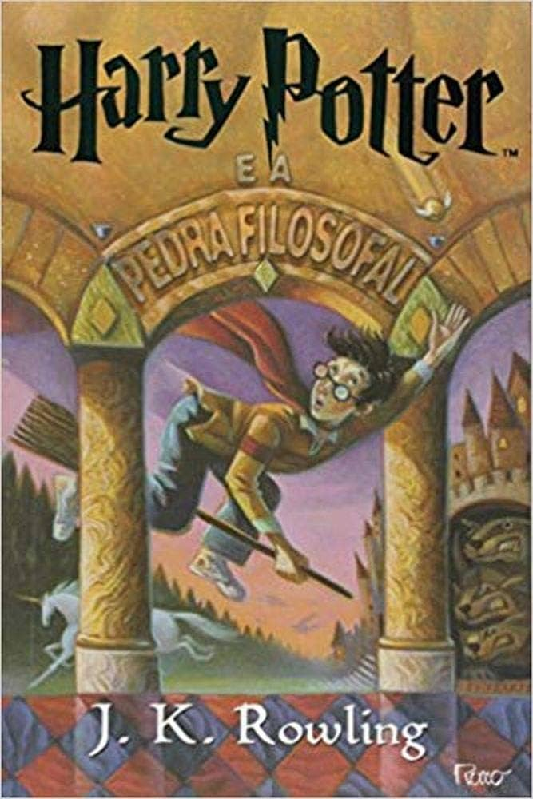
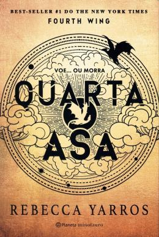
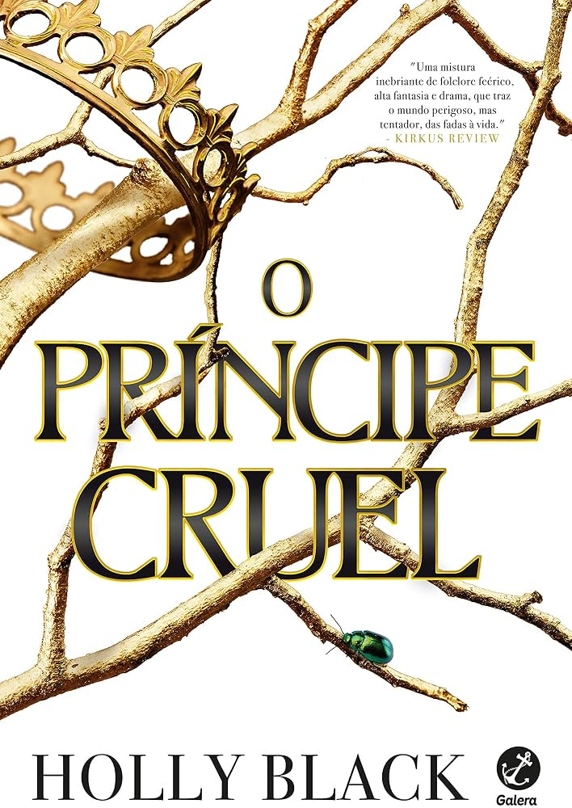

Harry Potter e a Pedra Filosofal
J.K. Rowling
Harry Potter é um garoto que descobre, ao completar onze anos, que pertence ao mundo da magia. Ao ingressar na Escola de Magia e Bruxaria de Hogwarts, conhece novos amigos e começa a descobrir segredos sobre seu passado. Uma aventura sobre amizade, coragem e descobertas.

Quarta Asa
Rebecca Yarros
Violet Sorrengail foi preparada para uma vida tranquila, mas acaba sendo enviada para uma academia onde jovens precisam enfrentar desafios para se tornarem cavaleiros de dragões. Em meio a perigos, rivalidades e descobertas, ela precisa provar sua capacidade de sobreviver.

O Príncipe Cruel
Holly Black
Jude é uma garota humana que vive no mundo das fadas, onde enfrenta preconceitos e disputas de poder. Determinada a conquistar seu espaço, ela se envolve em intrigas e conflitos com o príncipe Cardan. Uma fantasia marcada por rivalidades, ambição e jogos políticos.